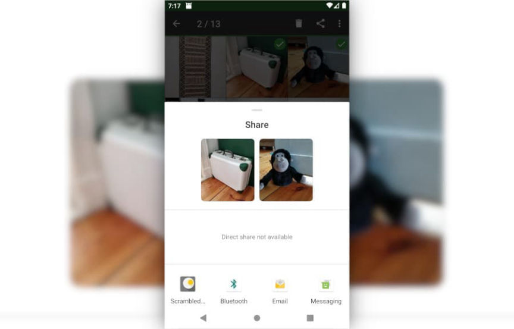
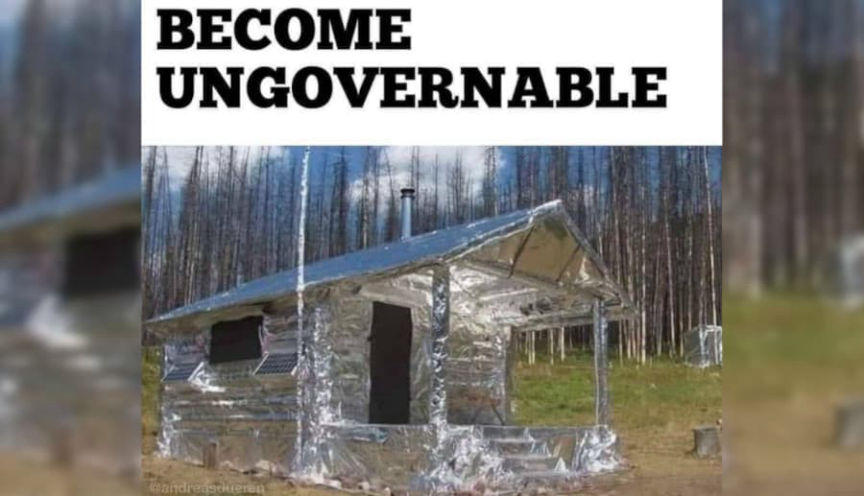
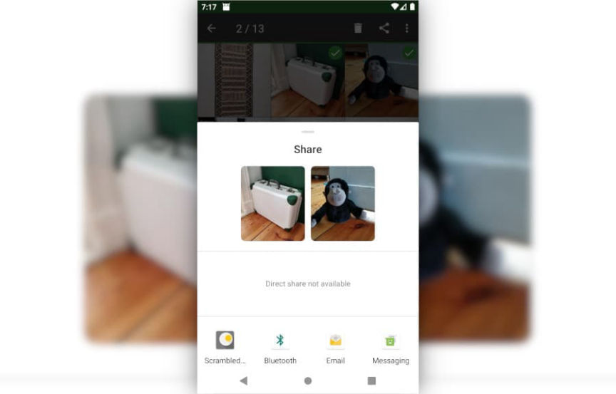
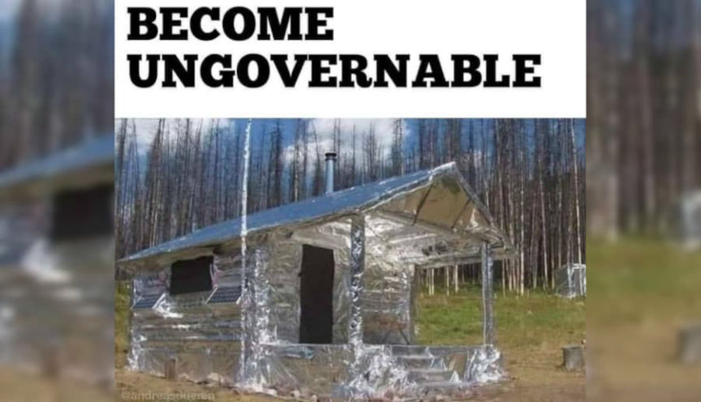

We Kill People Based on Metadata and Other Metadata Things
~3 min read | Published on 2022-08-22, tagged General-News using 535 words.
In a debate with the ACLU’s David Cole, the former director of the NSA and CIA, General Michael Hayden said,
“We kill people based on metadata”
2014: David Cole, the National Legal Director of the ACLU, participated in a debate with General Michael Hayden, the former Director of the National Security Agency and the Central Intelligence Agency, about the appropriate balance between personal privacy and national security. Hayden, an excellent example of the connection between the national security establishment and mainstream media, is now a national security analyst for CNN.
Cole and General Hayden discussed metadata, among other things. Cole brought up the NSA’s surveillance dragnets that either violated the law or used a secret interpretation of the law. He talked about how these spy agencies can know everything about a person through metadata alone. In response, Hayden said, “[that] description… is absolutely correct. We kill people based on metadata.”
Debate: <code>https://inv.riverside.rocks/watch?v=kV2HDM86XgI</code> or <code>http://u2cvlit75owumwpy4dj2hsmvkq7nvrclkpht7xgyye2pyoxhpmclkrad.onion/watch?v=kV2HDM86XgI</code> or <code>youtube[dot]com/watch?v=kV2HDM86XgI</code>
I do not believe there exist any methods through which one can entirely avoid these behemoth agencies’ data collection techniques. However, there are some valuable tools for dealing with metadata at an elementary level. I have listed some of these tools below.
Software solutions
“pdfparanoia is a PDF watermark removal library for academic papers. Some publishers include private information like institution names, personal names, ip addresses, timestamps and other identifying information in watermarks on each page.”
https://github.com/kanzure/pdfparanoiaPDF Redact Tool
“PDF Redact Tools helps with securely redacting and stripping metadata from documents before publishing.”
No longer maintained
https://github.com/firstlookmedia/pdf-redact-toolsDangerzone
“Take potentially dangerous PDFs, office documents, or images and convert them to safe PDFs.”
https://github.com/freedomofpress/dangerzone
https://dangerzone.rocks/#downloadsmat2
“mat2 is a metadata removal tool, supporting a wide range of commonly used file formats, written in python3: at its core, it’s a library, used by an eponymous command-line interface, as well as several file manager extensions.”
https://0xacab.org/jvoisin/mat2ExifTool
“ExifTool is a platform-independent Perl library plus a command-line application for reading, writing and editing meta information in a wide variety of files. ExifTool supports many different metadata formats including EXIF, GPS, IPTC, XMP, JFIF, GeoTIFF, ICC Profile, Photoshop IRB, FlashPix, AFCP and ID3, Lyrics3, as well as the maker notes of many digital cameras by Canon, Casio, DJI, FLIR, FujiFilm, GE, GoPro, HP, JVC/Victor, Kodak, Leaf, Minolta/Konica-Minolta, Motorola, Nikon, Nintendo, Olympus/Epson, Panasonic/Leica, Pentax/Asahi, Phase One, Reconyx, Ricoh, Samsung, Sanyo, Sigma/Foveon and Sony.”
https://exiftool.org/Scrambled Exif (Android)
“Scrambled Exif (pronounced eggsif) helps you remove the metadata in your pictures before you share them. […] To remove the metadata from a picture, simply share it like you’d normally do and choose Scrambled Exif. A moment later, the share ‘dialog’ will reappear. Now just share with the app you intended to share with in the first place.”
https://f-droid.org/packages/com.jarsilio.android.scrambledeggsif/

Imagepipe (Android)
“This app reduces image size by changing the resolution and quality of the image. It also removes exif data before sending the image. The modified image is saved in a separate folder in jpeg format. The original image remains unchanged. Imagepipe will receive a send intent for images, modify the image and send the changed image onward. Therefore, it takes you only one touch to pipe the image before sending”
https://f-droid.org/en/packages/de.kaffeemitkoffein.imagepipe/A Photo Manager (Android)
“Manage local photos: Find/Copy/Edit-Exif and show in Gallery or Map. Useful for visualizing photo exif data.”
https://f-droid.org/packages/de.k3b.android.androFotoFinder/

“We kill people based on metadata”
2014: David Cole, the National Legal Director of the ACLU, participated in a debate with General Michael Hayden, the former Director of the National Security Agency and the Central Intelligence Agency, about the appropriate balance between personal privacy and national security. Hayden, an excellent example of the connection between the national security establishment and mainstream media, is now a national security analyst for CNN.
sussy General Michael Hayden
Cole and General Hayden discussed metadata, among other things. Cole brought up the NSA’s surveillance dragnets that either violated the law or used a secret interpretation of the law. He talked about how these spy agencies can know everything about a person through metadata alone. In response, Hayden said, “[that] description… is absolutely correct. We kill people based on metadata.”
Debate: <code>https://inv.riverside.rocks/watch?v=kV2HDM86XgI</code> or <code>http://u2cvlit75owumwpy4dj2hsmvkq7nvrclkpht7xgyye2pyoxhpmclkrad.onion/watch?v=kV2HDM86XgI</code> or <code>youtube[dot]com/watch?v=kV2HDM86XgI</code>
I do not believe there exist any methods through which one can entirely avoid these behemoth agencies’ data collection techniques. However, there are some valuable tools for dealing with metadata at an elementary level. I have listed some of these tools below.
Software solutions
“pdfparanoia is a PDF watermark removal library for academic papers. Some publishers include private information like institution names, personal names, ip addresses, timestamps and other identifying information in watermarks on each page.”
https://github.com/kanzure/pdfparanoiaPDF Redact Tool
“PDF Redact Tools helps with securely redacting and stripping metadata from documents before publishing.”
No longer maintained
https://github.com/firstlookmedia/pdf-redact-toolsDangerzone
“Take potentially dangerous PDFs, office documents, or images and convert them to safe PDFs.”
https://github.com/freedomofpress/dangerzone
https://dangerzone.rocks/#downloadsmat2
“mat2 is a metadata removal tool, supporting a wide range of commonly used file formats, written in python3: at its core, it’s a library, used by an eponymous command-line interface, as well as several file manager extensions.”
https://0xacab.org/jvoisin/mat2ExifTool
“ExifTool is a platform-independent Perl library plus a command-line application for reading, writing and editing meta information in a wide variety of files. ExifTool supports many different metadata formats including EXIF, GPS, IPTC, XMP, JFIF, GeoTIFF, ICC Profile, Photoshop IRB, FlashPix, AFCP and ID3, Lyrics3, as well as the maker notes of many digital cameras by Canon, Casio, DJI, FLIR, FujiFilm, GE, GoPro, HP, JVC/Victor, Kodak, Leaf, Minolta/Konica-Minolta, Motorola, Nikon, Nintendo, Olympus/Epson, Panasonic/Leica, Pentax/Asahi, Phase One, Reconyx, Ricoh, Samsung, Sanyo, Sigma/Foveon and Sony.”
https://exiftool.org/Scrambled Exif (Android)
“Scrambled Exif (pronounced eggsif) helps you remove the metadata in your pictures before you share them. […] To remove the metadata from a picture, simply share it like you’d normally do and choose Scrambled Exif. A moment later, the share ‘dialog’ will reappear. Now just share with the app you intended to share with in the first place.”
https://f-droid.org/packages/com.jarsilio.android.scrambledeggsif/

Scrambled exif
Imagepipe (Android)
“This app reduces image size by changing the resolution and quality of the image. It also removes exif data before sending the image. The modified image is saved in a separate folder in jpeg format. The original image remains unchanged. Imagepipe will receive a send intent for images, modify the image and send the changed image onward. Therefore, it takes you only one touch to pipe the image before sending”
https://f-droid.org/en/packages/de.kaffeemitkoffein.imagepipe/A Photo Manager (Android)
“Manage local photos: Find/Copy/Edit-Exif and show in Gallery or Map. Useful for visualizing photo exif data.”
https://f-droid.org/packages/de.k3b.android.androFotoFinder/

Become ungovernable.